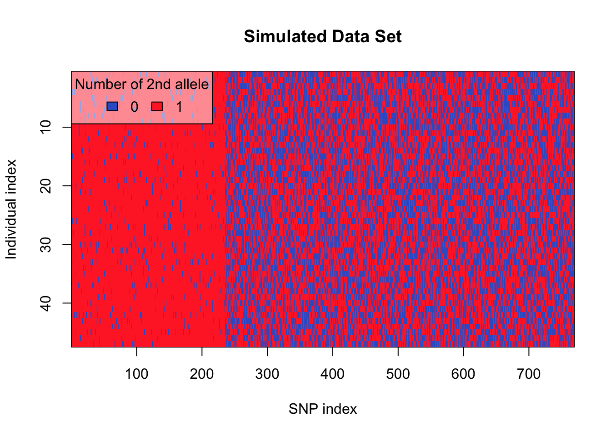

Analysis of Multiple Sequence Alignments
1/11/2021
Based on script by Mattia Greco
First we’ll load the needed libraries and alignment fasta file for Hyalosphenia papilio & Hyalosphenia elegans.
#load needed libraries
library(tidyverse)
library(adegenet)
library(ape)
library(vegan)
library(ggtree)
library(poppr)
##H. papilio
#load alignment file as a genlight object
hpap_align<-fasta2genlight('./Hpap_conc_MSA.fasta')
#loading as DNAbin to look at genome size - 32,811
hpap_dna_bin <- fasta2DNAbin('./Hpap_conc_MSA.fasta')
##H. elegans
#load alignment file as a genlight object
hele_align<-fasta2genlight('./Hele_conc_MSA.fasta')
#loading as DNAbin to look at genome size - 32,811
hele_dna_bin <- fasta2DNAbin('./Hele_conc_MSA.fasta')Here is some basic information about the alignments for H. papilio and H. elegans.
hpap_align## /// GENLIGHT OBJECT /////////
##
## // 44 genotypes, 769 binary SNPs, size: 89.7 Kb
## 1730 (5.11 %) missing data
##
## // Basic content
## @gen: list of 44 SNPbin
## @ploidy: ploidy of each individual (range: 1-1)
##
## // Optional content
## @ind.names: 44 individual labels
## @loc.all: 769 alleles
## @position: integer storing positions of the SNPs
## @other: a list containing: elements without nameshele_align## /// GENLIGHT OBJECT /////////
##
## // 28 genotypes, 715 binary SNPs, size: 62.6 Kb
## 1553 (7.76 %) missing data
##
## // Basic content
## @gen: list of 28 SNPbin
## @ploidy: ploidy of each individual (range: 1-1)
##
## // Optional content
## @ind.names: 28 individual labels
## @loc.all: 715 alleles
## @position: integer storing positions of the SNPs
## @other: a list containing: elements without namesNow we can use the function snpposi.plot() to visualize the distribution of polymorphisms in the alignment. It takes the arguments:
x: the SNP positions
genome.size: integer representing genome length
codon: a logical indicating if codon position should be indicated
The function position() here extracts a vector of integers representing the SNP positions from the genlight object.
Including the codon information gives us more information on the SNPs, as changes at codon position 2 are more likely to result in an amino acid change. Thus, trends in SNP density for this position are particularly informative on nonsynonymous variability.
snpposi.plot(position(hpap_align), genome.size = 57921, codon = TRUE) +
labs(title = ('Distribution of SNPs Across the Genome in H. papilio')) +
theme_minimal() +
theme(plot.title = element_text(face = "bold", hjust = .5, size = 18),
axis.title = element_text(size = 15))snpposi.plot(position(hele_align), genome.size = 32811, codon = TRUE) +
labs(title = ('Distribution of SNPs Across the Genome in H. elegans')) +
theme_minimal() +
theme(plot.title = element_text(face = "bold", hjust = .5, size = 18),
axis.title = element_text(size = 15))glPlot offers a convenient way to visualize genlight objects, enabling us to see SNPs across individuals. We can compare the observed data set to a simulated genlight object with the function glSim().
glPlot(hpap_align, posi="topleft", main = "H. papilio SNPs Across Individuals")glPlot(hele_align, posi="topleft", main = "H. elegans SNPs Across Individuals")glSim(n.ind = 47, n.snp.nonstruc = 769, ploidy=1) %>%
glPlot(posi = "topleft", main = "Simulated Data Set")
glPca performs Principal Components Analysis for genlight objects.
#perform PCA
hpap_pca <- glPca(hpap_align, nf = 3)
hele_pca <- glPca(hele_align, nf = 3)
#plotting PC1 & PC2 from pca scores obtained above
ggplot(as.data.frame(hpap_pca$scores), aes(x =PC1, y = PC2)) +
geom_point(color = "darkred", alpha = .6, size = 3) +
labs(title = "PCA for H. papilio") +
theme(plot.title = element_text(face = "bold", hjust = .5),
panel.background = element_rect(fill = "#F1F1F1"))ggplot(as.data.frame(hele_pca$scores), aes(x =PC1, y = PC2)) +
geom_point(color = "darkblue", alpha = .6, size = 3) +
labs(title = "PCA for H. elegans") +
theme(plot.title = element_text(face = "bold", hjust = .5), panel.background = element_rect(fill = "#F1F1F1"))We can add the location information by loading a csv file and joining the data.
#load population information
pop_info <- read_csv("./population_info.csv")
#select needed columns & rename
pop_info_pap <- pop_info %>%
select(`10digit code AMW`, location_of_sample) %>%
rename("code" = `10digit code AMW`)
pop_info_ele <- pop_info %>%
select(`x10_digit_code???`, location_of_sample) %>%
rename("code" = `x10_digit_code???`)
#join location information with pca scores
env <- hpap_pca$scores %>%
as.data.frame() %>%
rownames_to_column('var') %>%
mutate(var = substr(var, 1, 10)) %>%
inner_join(pop_info_pap, by = c("var" = "code"))
env_el <- hele_pca$scores %>%
as.data.frame() %>%
rownames_to_column('var') %>%
mutate(var = substr(var, 1, 10)) %>%
left_join(pop_info_ele, by = c("var" = "code")) %>%
mutate(location_of_sample = ifelse(is.na(location_of_sample),
"Unknown",
location_of_sample))Creating the PCA plot including location of each sample.
ggplot(env, aes(x =PC1, y = PC2, color = location_of_sample)) +
geom_point(alpha = .8, size = 2) +
labs(title = "PCA for H. papilio MSA", color = "Location") +
theme_minimal() +
theme(plot.title = element_text(face = "bold", hjust = .5),
legend.title = element_text(face = "bold"))
ggplot(env_el, aes(x =PC1, y = PC2, color = location_of_sample)) +
geom_point(alpha = .8, size = 2) +
labs(title = "PCA for H. elegans MSA", color = "Location") +
theme_minimal() +
theme(plot.title = element_text(face = "bold", hjust = .5),
legend.title = element_text(face = "bold"))The function envfit fits an environmental factor onto the ordination. This means the projections of points will be maximally correlated with the corresponding environmental variable.
env_result <- envfit(hpap_pca$scores, env, permutations = 999, na.rm = TRUE)
#print it to see goodness of fit results
env_result##
## ***VECTORS
##
## PC1 PC2 r2 Pr(>r)
## PC1 1.00000 0.00000 1 0.001 ***
## PC2 0.00000 1.00000 1 0.001 ***
## PC3 0.03739 -0.04698 0 1.000
## ---
## Signif. codes: 0 '***' 0.001 '**' 0.01 '*' 0.05 '.' 0.1 ' ' 1
## Permutation: free
## Number of permutations: 999
##
## ***FACTORS:
##
## Centroids:
## PC1 PC2
## varAm_tu_Hp03 -6.8416 0.5209
## varAm_tu_Hp04 -7.5766 0.4393
## varAm_tu_Hp05 -7.5975 0.5719
## varAm_tu_Hp06 -7.5411 0.4694
## varAm_tu_Hp07 -7.1544 0.4207
## varAm_tu_Hp08 6.1735 4.7200
## varAm_tu_Hp09 4.6576 -6.4703
## varAm_tu_Hp10 5.9732 4.4855
## varAm_tu_Hp11 4.1784 -5.8520
## varAm_tu_Hp12 6.0679 4.8217
## varAm_tu_Hp13 6.0496 4.9571
## varAm_tu_Hp15 -7.4031 0.5781
## varAm_tu_Hp16 6.2125 4.9930
## varAm_tu_Hp17 -7.2503 0.6138
## varAm_tu_Hp18 0.4338 -1.8355
## varAm_tu_Hp19 -7.4056 0.4665
## varAm_tu_Hp20 3.9090 -4.6911
## varAm_tu_Hp21 6.0122 4.2144
## varAm_tu_Hp22 5.9829 4.9217
## varAm_tu_Hp23 -7.3409 0.4780
## varAm_tu_Hp24 -7.3806 0.5363
## varAm_tu_Hp25 5.4186 4.2709
## varAm_tu_Hp26 3.8771 -4.6778
## varAm_tu_Hp27 4.6629 -6.5495
## varAm_tu_Hp28 -7.5204 0.6131
## varAm_tu_Hp29 6.0264 4.9907
## varAm_tu_Hp30 -6.5662 0.3721
## varAm_tu_Hp31 -7.1842 0.6671
## varAm_tu_Hp32 4.2638 -5.9871
## varAm_tu_Hp33 -6.9265 0.7097
## varAm_tu_Hp34 -6.6550 0.4573
## varAm_tu_Hp35 4.5089 -6.4651
## varAm_tu_Hp36 4.7870 -6.7157
## varAm_tu_Hp37 -6.3932 0.5941
## varAm_tu_Hp38 4.8372 -6.3754
## varAm_tu_Hp39 5.7956 3.9862
## varAm_tu_Hp40 -6.4860 0.5326
## varAm_tu_Hp41 6.3401 4.9197
## varAm_tu_Hp42 6.1604 5.1152
## varAm_tu_Hp43 6.1098 4.5328
## varAm_tu_Hp44 -7.0647 0.3232
## varAm_tu_Hp45 4.9130 -6.6647
## varAm_tu_Hp46 4.3756 -6.1923
## varAm_tu_Hp47 0.5608 -1.8165
## location_of_sampleAcadia National Park 2.6413 -2.7709
## location_of_sampleGreat Cranberry Island 4.6576 -6.4703
## location_of_sampleHarvard Forest 5.9369 4.5571
## location_of_sampleHawley bog -5.7973 0.6547
## location_of_sampleOrono bog 0.5698 2.3565
##
## Goodness of fit:
## r2 Pr(>r)
## var 1.0000 1.000
## location_of_sample 0.4754 0.001 ***
## ---
## Signif. codes: 0 '***' 0.001 '**' 0.01 '*' 0.05 '.' 0.1 ' ' 1
## Permutation: free
## Number of permutations: 999env_result_el <- envfit(hele_pca$scores, env_el, permutations = 999, na.rm = TRUE)
env_result_el##
## ***VECTORS
##
## PC1 PC2 r2 Pr(>r)
## PC1 1.00000 0.00000 1 0.001 ***
## PC2 0.00000 1.00000 1 0.001 ***
## PC3 0.11017 -0.07723 0 1.000
## ---
## Signif. codes: 0 '***' 0.001 '**' 0.01 '*' 0.05 '.' 0.1 ' ' 1
## Permutation: free
## Number of permutations: 999
##
## ***FACTORS:
##
## Centroids:
## PC1 PC2
## varAm_tu_Hy03 -2.2393 -0.6331
## varAm_tu_Hy06 -2.1788 -0.4045
## varAm_tu_Hy10 -2.5349 -0.5752
## varAm_tu_Hy11 -2.4407 -0.5201
## varAm_tu_Hy12 -2.0377 -0.3968
## varAm_tu_Hy13 -2.1783 -0.4810
## varAm_tu_Hy14 -2.4382 -0.6240
## varAm_tu_Hy15 11.8849 -2.2263
## varAm_tu_Hy16 -2.0507 -0.4889
## varAm_tu_Hy17 -2.5125 -0.5683
## varAm_tu_Hy18 -2.2832 -0.4235
## varAm_tu_Hy19 -2.1188 -0.4000
## varAm_tu_Hy20 15.1081 -6.0593
## varAm_tu_Hy22 -2.4086 -0.4700
## varAm_tu_Hy24 -2.1328 -0.3651
## varAm_tu_Hy25 -2.2245 -0.3610
## varAm_tu_Hy26 -2.1546 -0.4595
## varAm_tu_Hy27 -1.9886 -0.4077
## varAm_tu_Hy28 6.2364 12.1452
## varAm_tu_Hy31 -2.0572 -0.3736
## varAm_tu_Hy35 6.5766 12.5037
## varAm_tu_Hy36 -2.5388 -0.6118
## varAm_tu_Hy37 12.9633 -5.0974
## varAm_tu_Hy39 -2.4001 -0.4253
## varAm_tu_Hy40 -2.5204 -0.5279
## varAm_tu_Hy42 -2.4806 -0.5482
## varAm_tu_Hy4c -2.4236 -0.5355
## varAm_tu_Hy8c -2.4264 -0.6648
## location_of_sampleAcadia National Park 0.5940 3.7951
## location_of_sampleHarvard Forest -2.0716 -0.4336
## location_of_sampleHawley bog -2.1717 -0.3805
## location_of_sampleOrono bog 1.4185 -1.6352
## location_of_sampleUnknown -0.0537 -1.0430
##
## Goodness of fit:
## r2 Pr(>r)
## var 1.0000 1.000
## location_of_sample 0.1262 0.556
## Permutation: free
## Number of permutations: 999Then we can put the centroids and PCA results together.
#helpful for labelling
library(ggrepel)
centroid_score <- env_result$factors$centroids %>%
as.data.frame() %>%
rownames_to_column('var') %>%
filter(substr(var, 1,3) == "loc") %>%
mutate(var = substr(var, 19, nchar(var)))
centroid_score_el <- env_result_el$factors$centroids %>%
as.data.frame() %>%
rownames_to_column('var') %>%
filter(substr(var, 1,3) == "loc") %>%
mutate(var = substr(var, 19, nchar(var)))
ggplot()+
geom_point(data = env, aes(x = PC1, y = PC2, fill = location_of_sample),
shape = 21,
size = 3) +
geom_point(data = centroid_score,
aes(x = PC1, y = PC2),
shape = 23, size = 7)+
geom_text_repel(data = centroid_score,
aes(x = PC1, y = PC2, label = var), box.padding = .8) +
theme_classic() +
scale_fill_brewer(palette = "Set3") +
labs(fill = "Sample Location",
title = "Population Structure by Location in H. papilio") +
theme(plot.title = element_text(face = "bold", hjust = .5),
legend.title = element_text(face = "bold"))ggplot()+
geom_point(data = env_el, aes(x = PC1, y = PC2, fill = location_of_sample),
shape = 21,
size = 3) +
geom_point(data = centroid_score_el,
aes(x = PC1, y = PC2),
shape = 23, size = 7)+
geom_text_repel(data = centroid_score_el,
aes(x = PC1, y = PC2, label = var), box.padding = 1.2) +
theme_classic() +
scale_fill_brewer(palette = "Set3") +
labs(fill = "Sample Location",
title = "Population Structure by Location in H. elegans") +
theme(plot.title = element_text(face = "bold", hjust = .5),
legend.title = element_text(face = "bold"))We can also build trees. The nj function returns a neighbor-joining tree (phylo object).
hpap_align$ind.names <- substr(hpap_align$ind.names, 1, 10)
hele_align$ind.names <- substr(hele_align$ind.names, 1, 10)
#generate neighbor-joining tree
tree_nj <- nj(dist(as.matrix(hpap_align)))
plot.phylo(tree_nj)tree_nj_el <- nj(dist(as.matrix(hele_align)))
plot.phylo(tree_nj_el)#generate upgma tree
tree_up <- aboot(hpap_align, tree = "upgma", distance = bitwise.dist, sample = 100, cutoff = 50)##
Running bootstraps: 100 / 100
## Calculating bootstrap values... done.tree_up_el <- aboot(hele_align, tree = "upgma", distance = bitwise.dist, sample = 100, cutoff = 50)##
Running bootstraps: 100 / 100
## Calculating bootstrap values... done.Now we can add location information to the trees.
meta <- env %>% select(var, location_of_sample) %>%
rename("tip.label" = var)
meta_el <- env_el %>% select(var, location_of_sample) %>%
rename("tip.label" = var)
hpap_tree <- ggtree(tree_up) %<+% meta
hele_tree <- ggtree(tree_up_el) %<+% meta_el
hpap_tree +
geom_tippoint(aes(color = location_of_sample))+
geom_nodelab() +
theme(legend.title = element_blank(),
legend.text = element_text(size = 15)) +
geom_tiplab(size = 1.8, aes(label = substr(label, 6, 10))) +
labs(title = "Dendrogram for H. papilio")hele_tree +
geom_tippoint(aes(color = location_of_sample))+
geom_nodelab() +
theme(legend.title = element_blank(),
legend.text = element_text(size = 15)) +
geom_tiplab(size = 1.8, aes(label = substr(label, 6, 10))) +
labs(title = "Dendrogram for H. elegans")